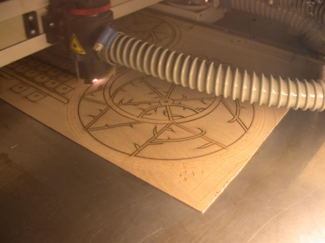
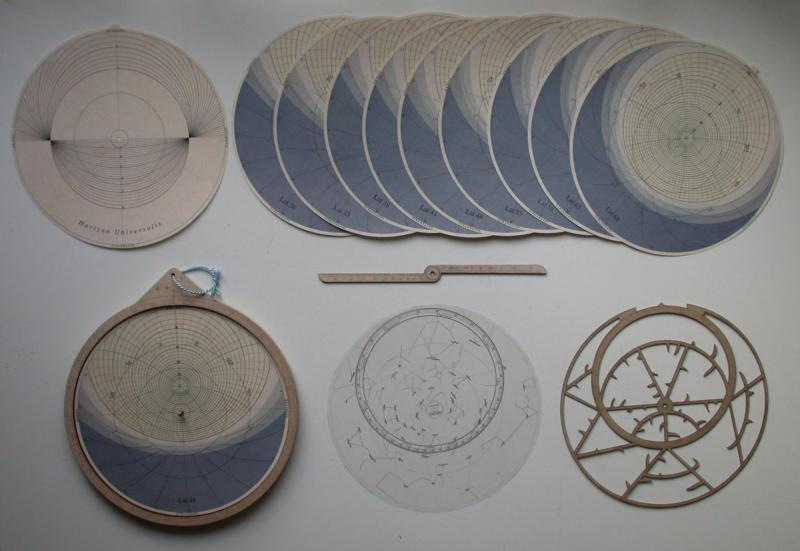
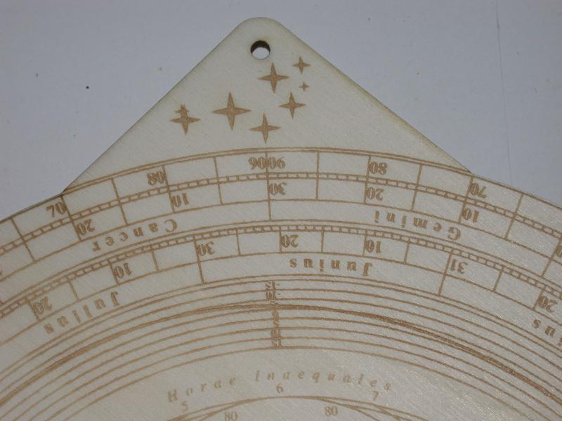
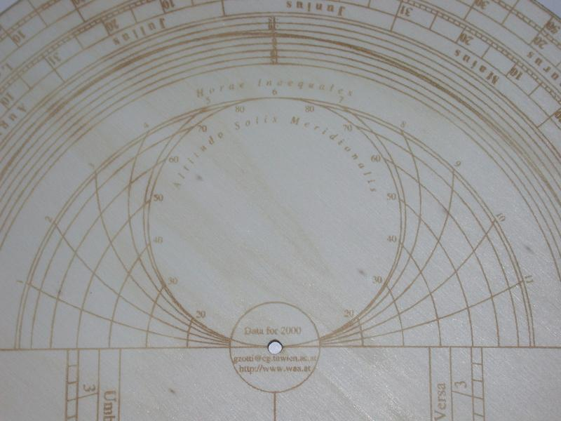
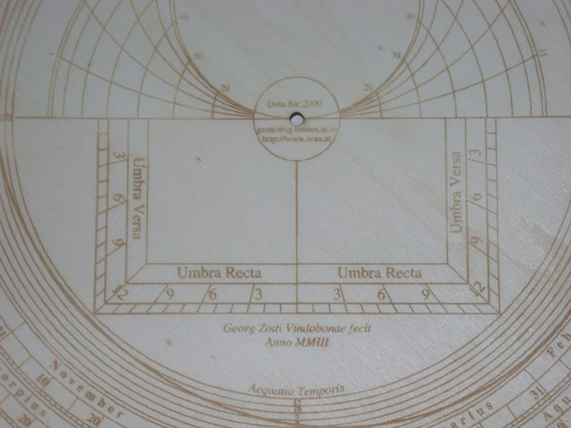
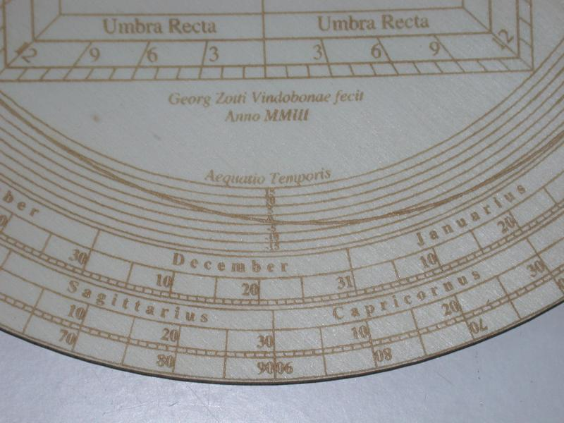
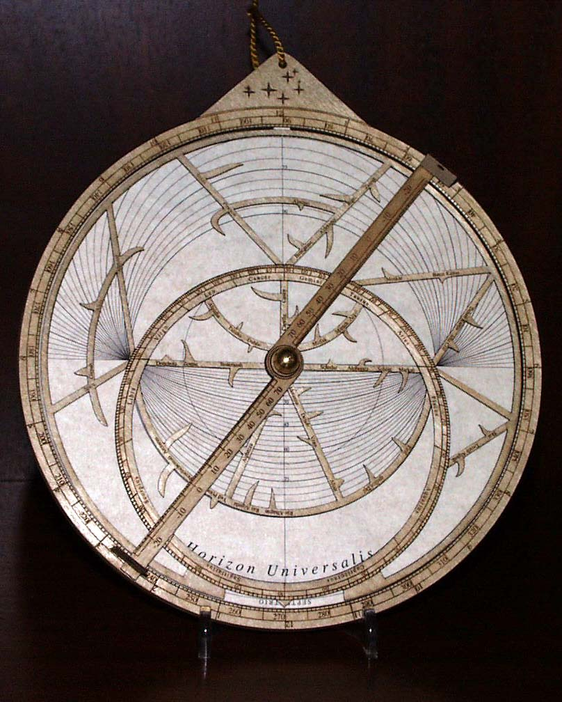

I wanted to have an astrolabe from the time I saw one in my first astronomy book, around 1980.
In 1987, I acquired a cardboard model from the gift shop at Chicago's Adler Planetarium.
In the late 1990s, my astronomical interest shifted to cultural aspects and the history of astronomy. In the Peuerbach Museum, Austria, a nice exhibition about Georg Aunpeckh von Peuerbach shows many instrument replica made mostly by Martin Brunold, which reawakened my interest in this field.
In late 2002, I found "astrolabe websites", many of them selling astrology software, but some really dealing with that ingenious instrument. Having no experience in metal work, I first just printed and made one astrolabe from Keith Powell's Java astrolabe. This is a very nice set of programs1, however, the printing quality did not suffice for me, so I decided to create my own instrument, which in its artistic implementation I dedicated to one of my astronomy clubs (WAA).
I used the printer language PostScript for programming, to avoid problems with having to compile other languages on various platforms with different image drawing libraries. The resulting EPS files can be used in many graphics applications. Many configuration variables allow tweaking and tuning of many different aspects, e.g. you can set precession by adjusting a year value in the file header for the rete.
Originally only planned for printing on heavy paper, I used a chance to make a few instruments in plywood, using a laser engraver. In spring of 2003, a seminar on astrolabes was taking place in Vienna. Here I presented my work on May 3rd, 2003, and again at the WAA Annual Meeting , where I received the club's Alcyone Prize 2003 for construction and production of the WAA Astrolabe.
1980 sah ich in meinem ersten Astronomiebuch ein Astrolabium und wollte sofort eines haben.
1987 konnte ich im Adler Planetarium, Chicago, ein Kartonmodell erwerben.
In den späten 1990er Jahren wurde mein Interesse an diesem Instrument durch eine Veranstaltungs- und Ausstellungsserie zu Georg von Peuerbach wieder geweckt. Im Schloß Peuerbach findet sich nun eine Dauerausstellung mit Astrolab-Nachbauten aus der Werkstatt von Martin Brunold.
Im Herbst 2002 machte ich mich auf die Suche nach Astrolabien am WWW. Einige gute sites konnte ich finden, sehr erfreulich war Keith Powells Java-Astrolab mit Druckmöglichkeit1. Leider ist die Druckqualität nicht besonders gut, und da beschloß ich, selbst ein druckbares Astrolab zu entwickeln, das ich in der künstlerischen Ausführung einem meiner Astronomievereine, der Wiener Arbeitsgemeinschaft für Astronomie (WAA), gewidmet habe.
Als Programmiersprache kam hier die Druckersprache PostScript zum Einsatz, da ich ein vollständig auf dem Drucker exekutierbares Programm einfacher handhabbar finde als ein ausführbares Programm, das für hochwertigen Druck ja ebenfalls PostScript erzeugen müßte, und das auf mehreren Plattformen übersetzt und gewartet werden müßte. Die nun vorliegenden PostScript-Programme sind vielseitig ausdruckbar, so kann z.B. eine Tympan-Scheibe für beliebige geographische Breite gedruckt werden, indem die Breite am Dateianfang eingestellt wird. Durch Verändern einer Jahreszahl am Dateianfang kann sogar die Präzession bei den Sternpositionen berücksichtigt werden. Der Drucker rechnet sich das Bild also selbst aus. Bei der Entwicklung in einer so ungewöhnlichen Sprache hilft es natürlich, wenn man in einer ähnlichen Sprache (RPL) schon einmal ein größeres Projekt verwirklicht hat ( Urania/48).
Wer sich mit Astrolabien beschäftigt, kommt irgendwann auf den Begriff der Ungleichen Stunden. Bis zur Erfindung mechanischer Uhren war diese Art der Zeitangabe weit verbreitet. Der lichte Tag wurde in 12 gleiche Teile geteilt, die Nacht ebenfalls. Außer zur Tag- und Nachtgleiche hatten nun die Tagstunden eine andere Dauer als die Nachtstunden. Die Erste Stunde begann mit Sonnenaufgang, die sechste Stunde endete zu Mittag (daher der Begriff "Siesta" in Spanien!). Diese Stundenlinien wurden auf dem klassischen Astrolabium als einfache Kreislinien durch je 3 zusammengehörige Zwölftelteilungen der Wendekreise und des Äquatorkreises dargestellt. Dies ist eine recht gute Näherung bis etwa 55 Grad nördlicher Breite, bis zum Polarkreis verformen sich aber die "richtigen" Kurven zu S-Kurven, ja nördlich des Polarkreises könnte man die klassischen Linien gar nicht konstruieren, da ein Schnittpunkt wegfällt. Auf dem WAA-Astrolab sind diese Linien streng gerechnet, weshalb nun (erstmals?) auch nahe beim und sogar nördlich des Polarkreises Tag und Nacht in je 12 gleich lange Teile geteilt werden. Wahlweise kann aber auch die klassische Dreipunkt-Methode eingestellt werden (oder auch beide im Vergleich).
Ursprünglich nur zum Drucken vorgesehen, konnte ich im Frühjahr 2003 einige Geräte mit Hilfe eines Lasergravierers aus Sperrholz herstellen. Diese Geräte präsentierte ich am 3. Mai 2003 im Rahmen der Internationalen Fachabende des Österreichischen Astronomischen Vereins zum Thema Astrolabien. Auf der Jahrestagung 2003 der WAA wurde mir für Entwicklung und Bau des Astrolabs der Alcyone-Preis zuerkannt.
Leider ist mein Gerätevorrat aufgebraucht, und derzeit habe ich weder Zeit noch Zugang zu Maschinen für weitere Produktion.
Es gibt 2 Modelle, alle zum Gebrauch auf der nördlichen Erdhalbkugel. Zu jeder Rete in Holz kommt eine Sternkarte auf Transparentfolie, die ergänzend unter die Rete plaziert oder im Austausch verwendet werden kann. Die Daten sind für das Jahr 2000 gerechnet.
Jedes dieser Modelle gibt es in 3 Ausführungen der Rückseite. Alle zeigen Gradskala zur Höhenmessung am Außenrand sowie konzentrische Kalender/Zodiak-Skalen.
Auf Wunsch kann ich die Astrolabien auch für andere Zeiten (Präzession) und Orte (maßgeschneiderte Horizont-Blätter, Südastrolabien mit gespiegelter Vorderseite) fertigen, jedoch nur mehr auf Karton/Overheadfolie gedruckt. Die Holz-Instrumente sollen ja etwas Besonderes bleiben und kein Massenprodukt werden.
Im Nov. 2004 erhielt ich genauere Beschreibungen und sogar teilweise Konstruktionsanleitungen für die selteneren Universal-Astrolabien nach Rojas und de la Hire, hier werden die Beschreibungen eher rar! Ebenso erhielt ich Information zu Konstruktion und vor allem Anwendung einiger seltenerer Diagramme, die ich derzeit (2007) ergänze.
Leider ist die Maschine ca. 2008 ausgefallen. Ob es also Rojas und de la Hire-Instrumente in Holz geben wird, kann ich noch nicht sagen.







Back to Home page
{kind=link}
{kind=link}
{kind=link}
{kind=link}